f1-1
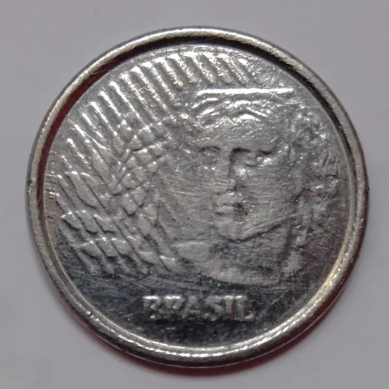
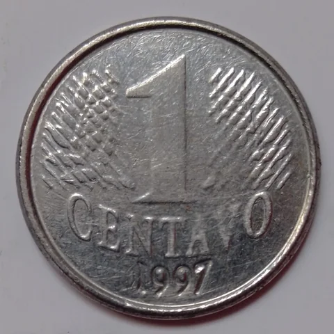
4 moeda(s): 1 Centavo 1994, 1 Centavo 1995, 1 Centavo 1996, 1 Centavo 1997
1_Centavo_1997_-_R_ckseite_alt_.jpg · 1_Centavo_1997_-_Vorderseite_alt_.jpg
Wikimedia Commons — Cerdded41 (CC BY-SA 4.0)
_-_R%C3%BCckseite_(alt).jpg){kind=link}
_-_Vorderseite_(alt).jpg){kind=link}
f1-5
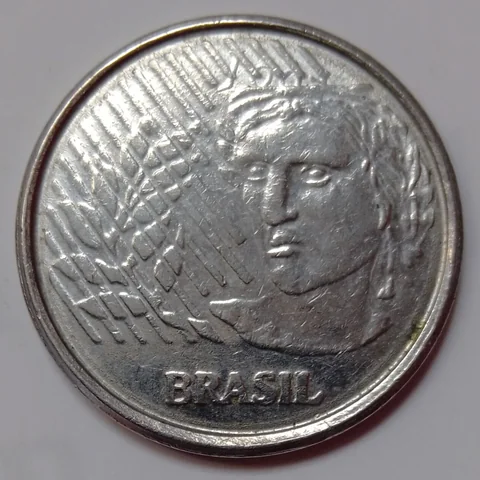
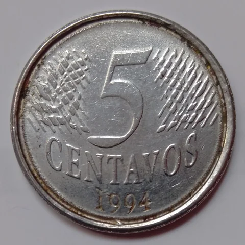
4 moeda(s): 5 Centavos 1994, 5 Centavos 1995, 5 Centavos 1996, 5 Centavos 1997
5_Centavos_1994_-_R_ckseite_alt_.jpg · 5_Centavos_1994_-_Vorderseite_alt_.jpg
Wikimedia Commons — Cerdded41 (CC BY-SA 4.0)
_-_R%C3%BCckseite_(alt).jpg){kind=link}
_-_Vorderseite_(alt).jpg){kind=link}
f1-10
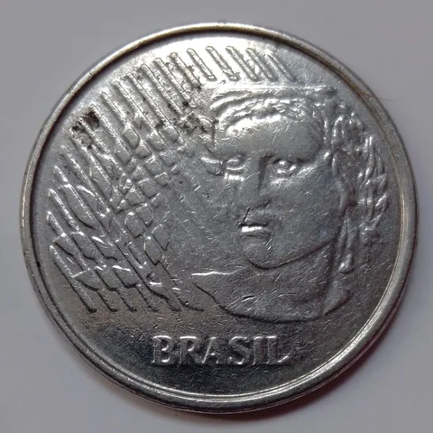
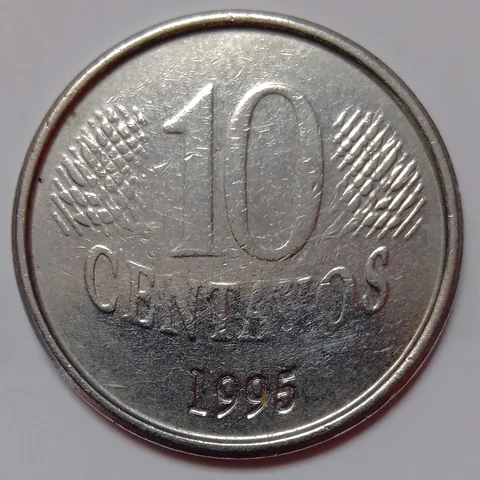
4 moeda(s): 10 Centavos 1994, 10 Centavos 1995, 10 Centavos 1996, 10 Centavos 1997
10_Centavos_1995_-_R_ckseite_alt_.jpg · 10_Centavos_1995_-_Vorderseite_alt_.jpg
Wikimedia Commons — Cerdded41 (CC BY-SA 4.0)
_-_R%C3%BCckseite_(alt).jpg){kind=link}
_-_Vorderseite_(alt).jpg){kind=link}
f1-25
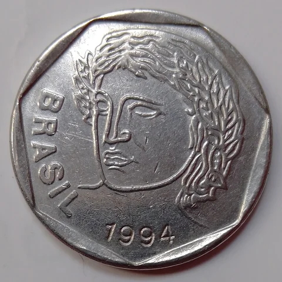
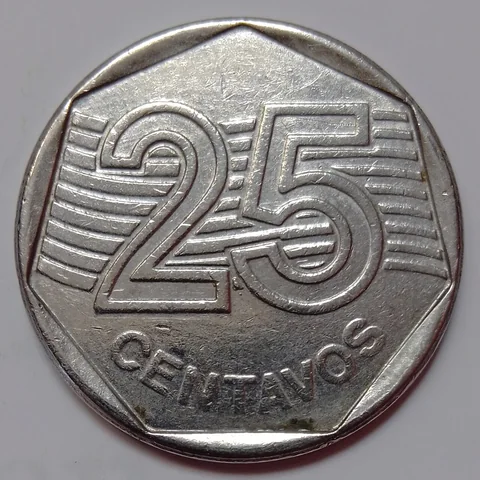
2 moeda(s): 25 Centavos 1994, 25 Centavos 1995
25_Centavos_1994_-_R_ckseite_alt_.jpg · 25_Centavos_1994_-_Vorderseite_alt_.jpg
Wikimedia Commons — Cerdded41 (CC BY-SA 4.0)
_-_R%C3%BCckseite_(alt).jpg){kind=link}
_-_Vorderseite_(alt).jpg){kind=link}
f1-50
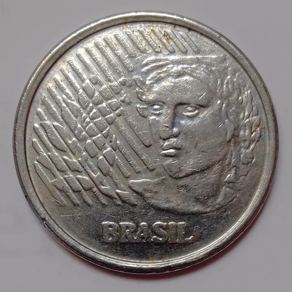
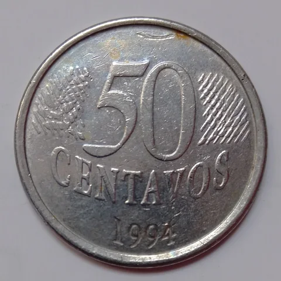
2 moeda(s): 50 Centavos 1994, 50 Centavos 1995
50_Centavos_1994_-_R_ckseite_alt_.jpg · 50_Centavos_1994_-_Vorderseite_alt_.jpg
Wikimedia Commons — Cerdded41 (CC BY-SA 4.0)
_-_R%C3%BCckseite_(alt).jpg){kind=link}
_-_Vorderseite_(alt).jpg){kind=link}
f1-100
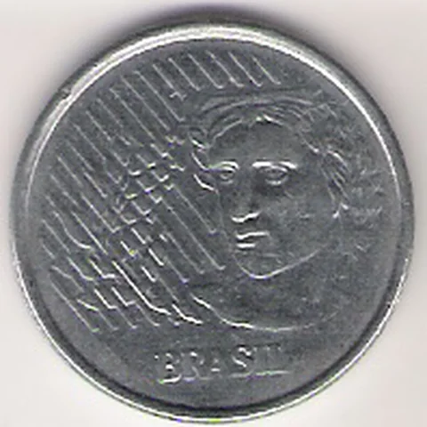
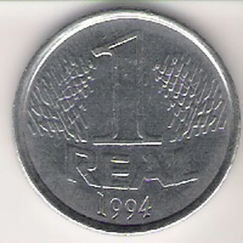
1 moeda(s): 1 Real 1994
Moeda_de_1_real_da_1_gera_o_verso_.png · Moeda_de_1_Real_da_primeira_gera_o.png
Wikimedia Commons — MisterSanderson (CC BY-SA 2.5)
.png){kind=link}

f2-1
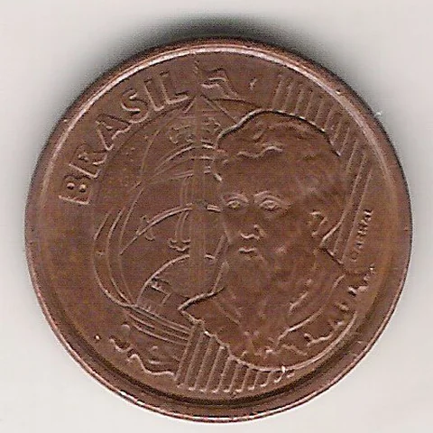
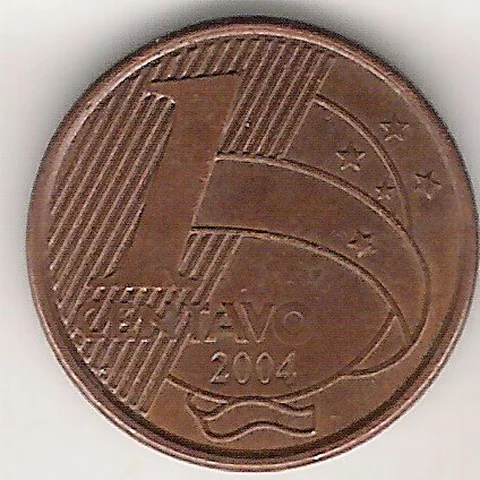
7 moeda(s): 1 Centavo 1998, 1 Centavo 1999, 1 Centavo 2000, 1 Centavo 2001, 1 Centavo 2002, 1 Centavo 2003…
Moeda_de_1_centavo_da_2_gera_o_verso_.jpg · Moeda_de_1_centavo_da_2_gera_o.jpg
Wikimedia Commons — Anderson Batista Evangelista Lima (MisterSanderson (CC BY-SA 2.5)
.jpg){kind=link}

f2-5
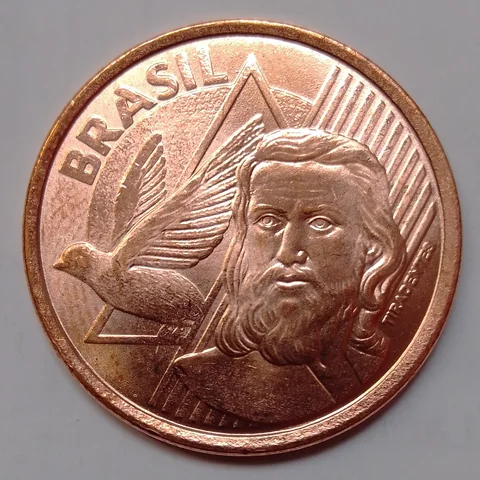
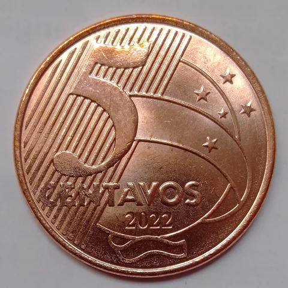
29 moeda(s): 5 Centavos 1998, 5 Centavos 1999, 5 Centavos 2000, 5 Centavos 2001, 5 Centavos 2002, 5 Centavos 2003…
5_Centavos_2022_-_R_ckseite.jpg · 5_Centavos_2022_-_Vorderseite.jpg
Wikimedia Commons — Cerdded41 (Public domain)
_-_R%C3%BCckseite.jpg){kind=link}
_-_Vorderseite.jpg){kind=link}
f2-10
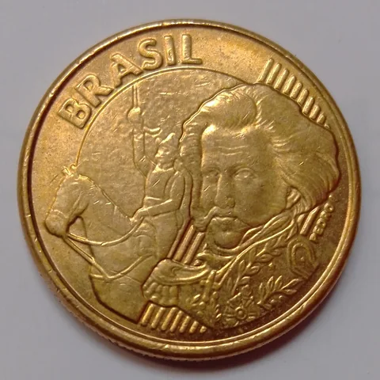
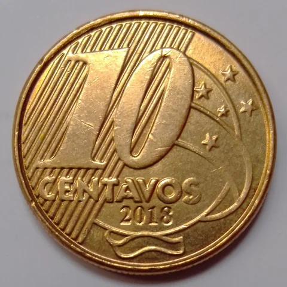
29 moeda(s): 10 Centavos 1998, 10 Centavos 1999, 10 Centavos 2000, 10 Centavos 2001, 10 Centavos 2002, 10 Centavos 2003…
10_Centavos_2018_-_R_ckseite.jpg · 10_Centavos_2018_-_Vorderseite.jpg
Wikimedia Commons — Cerdded41 (Public domain)
_-_R%C3%BCckseite.jpg){kind=link}
_-_Vorderseite.jpg){kind=link}
f2-25
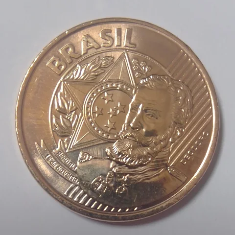
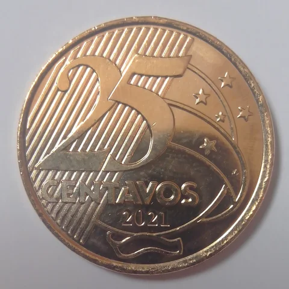
29 moeda(s): 25 Centavos 1998, 25 Centavos 1999, 25 Centavos 2000, 25 Centavos 2001, 25 Centavos 2002, 25 Centavos 2003…
25_Centavos_2021_-_R_ckseite.jpg · 25_Centavos_2021_-_Vorderseite.jpg
Wikimedia Commons — Cerdded41 (Public domain)
_-_R%C3%BCckseite.jpg){kind=link}
_-_Vorderseite.jpg){kind=link}
f2-50
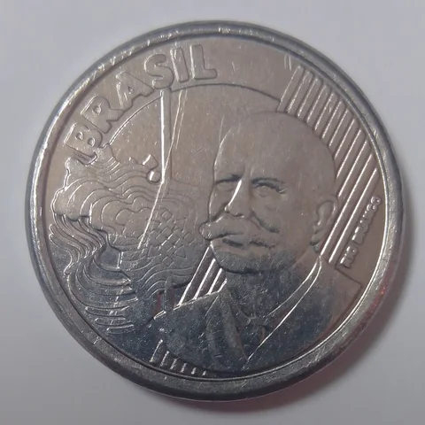
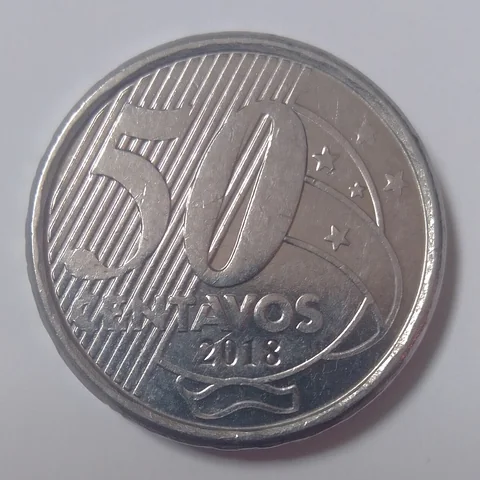
27 moeda(s): 50 Centavos 1998, 50 Centavos 2000, 50 Centavos 2001, 50 Centavos 2002, 50 Centavos 2003, 50 Centavos 2005…
50_Centavos_2018_-_R_ckseite.jpg · 50_Centavos_2018_-_Vorderseite.jpg
Wikimedia Commons — Cerdded41 (Public domain)
_-_R%C3%BCckseite.jpg){kind=link}
_-_Vorderseite.jpg){kind=link}
f2-100
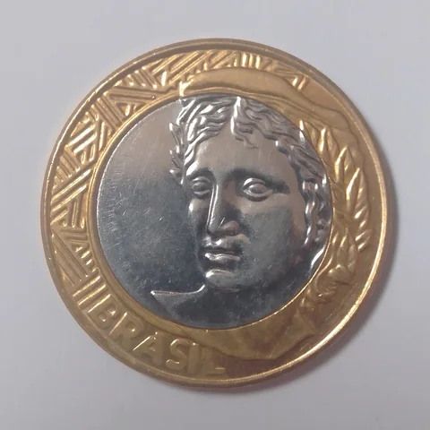
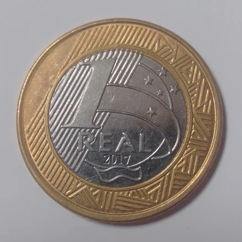
27 moeda(s): 1 Real 1998, 1 Real 1999, 1 Real 2002, 1 Real 2003, 1 Real 2004, 1 Real 2005…
1_Real_2017_-_R_ckseite.jpg · 1_Real_2017_-_Vorderseite.jpg
Wikimedia Commons — Cerdded41 (CC BY-SA 4.0)
_-_R%C3%BCckseite.jpg){kind=link}
_-_Vorderseite.jpg){kind=link}
f2-5A

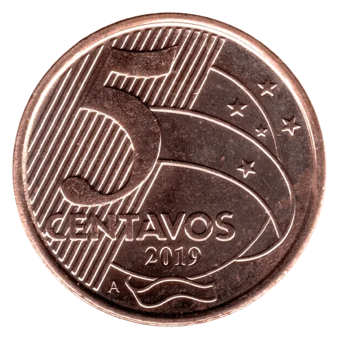
1 moeda(s): 5 Centavos 2019A
5_Centavos_2022_-_R_ckseite.jpg · 5-centavos-2019-A.png
Wikimedia Commons — Cerdded41 (Public domain); Design: Central Bank of Brazil (Public domain)

f2-50A

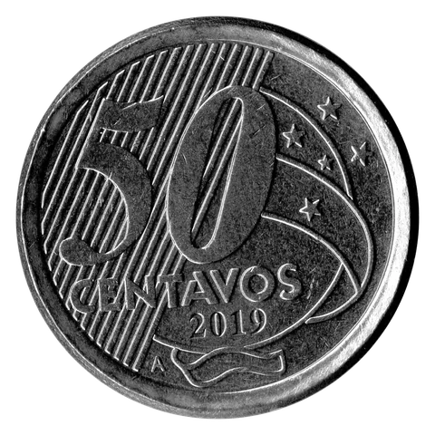
1 moeda(s): 50 Centavos 2019A
50_Centavos_2018_-_R_ckseite.jpg · 50-centavos-2019-A.png
Wikimedia Commons — Cerdded41 (Public domain); Design: Central Bank of Brazil (Public domain)

com-fao10
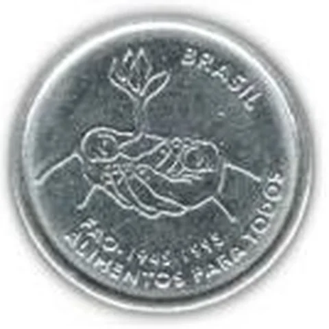
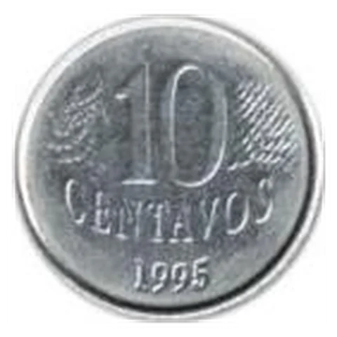
1 moeda(s): 10 Centavos 1995 – FAO Alimentos para o Mundo
10_centavos_fao_cropped_.png · 10_centavos_fao.png
Wikimedia Commons — Phamat123 (CC BY-SA 4.0)
.png){kind=link}

com-fao25
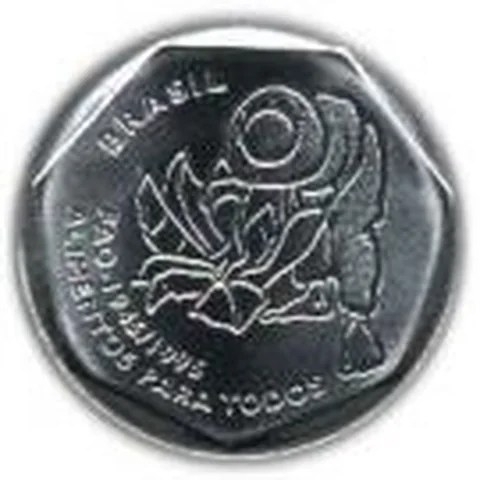
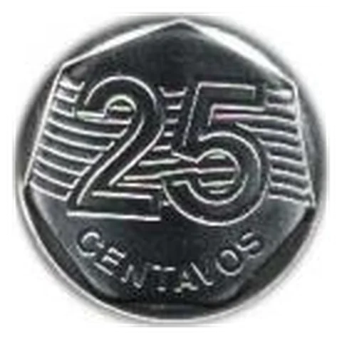
1 moeda(s): 25 Centavos 1995 – FAO Alimentos para o Mundo
25_centavos_fao_cropped_.png · 25_centavos_fao.png
Wikimedia Commons — Phamat123 (CC BY-SA 4.0)
.png){kind=link}

com-dh1998
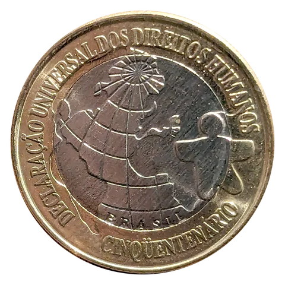
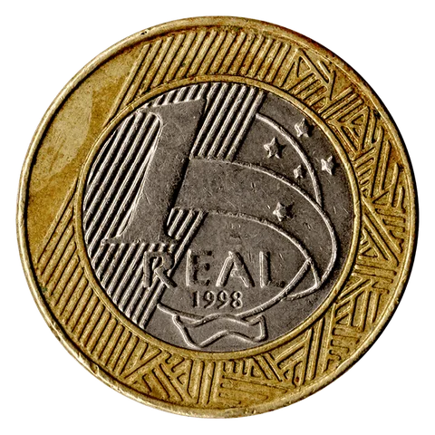
1 moeda(s): 1 Real 1998 – 50 Anos Declaração Direitos Humanos
1-real-1998-direitos-humanos-anverso-2.png · 1-real-1998-direitos-humanos-reverso.png
Wikimedia Commons — Photograph: User:Avelludo. Design: Central Bank of (Public domain); Scan: User:Avelludo. Design: Central Bank of Brazi (Public domain)


com-jk2002
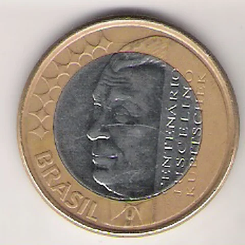
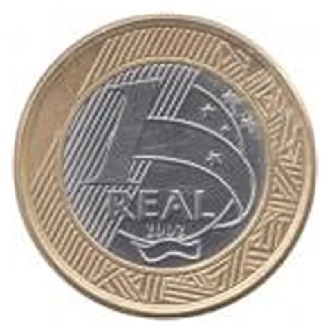
1 moeda(s): 1 Real 2002 – 100 Anos Juscelino Kubitschek
Moeda_de_1_Real_-_Comemorativa_do_centen_rio_de_Juscelino_kubitschek.png · 1_real_Juscelino_Kubitschek.png
Wikimedia Commons — MisterSanderson (CC BY-SA 2.5); Phamat123 (CC BY-SA 4.0)


com-bc2005
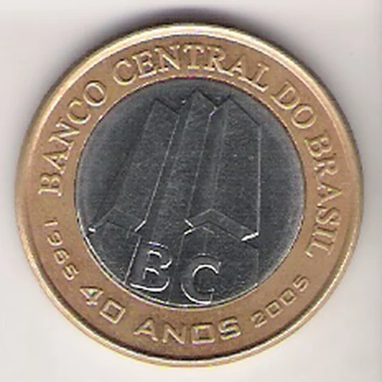
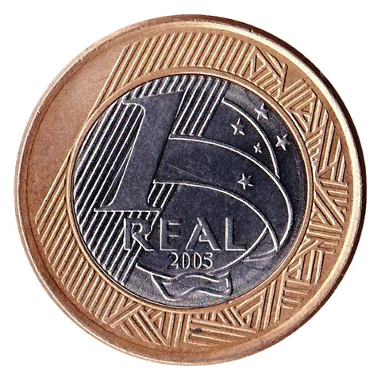
1 moeda(s): 1 Real 2005 – 40 Anos Banco Central do Brasil
Moeda_de_1_Real_-_Comemorativa_de_40_anos_do_Banco_Central.png · Brazil_R_01_2005_central_bank.jpg
Wikimedia Commons — MisterSanderson (CC BY-SA 2.5); Awmcphee (CC0)


com-bc2015
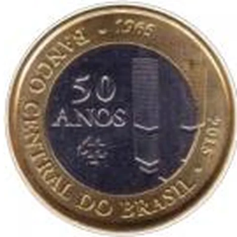
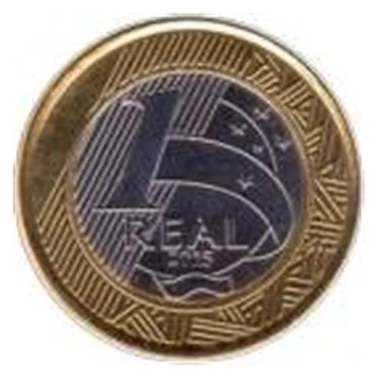
1 moeda(s): 1 Real 2015 – 50 Anos Banco Central do Brasil
1_Real_50_Years_of_Central_Bank_cropped_.png · 1_Real_50_Years_of_Central_Bank_.png
Wikimedia Commons — Rawlan1998 (CC BY-SA 4.0)
_(cropped).png){kind=link}
.png){kind=link}
com-25anos
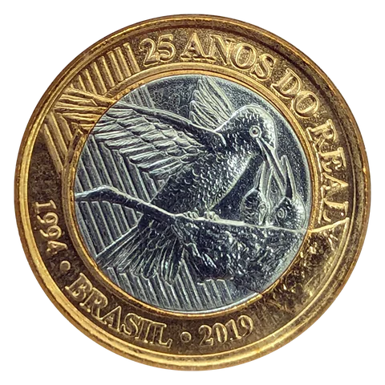
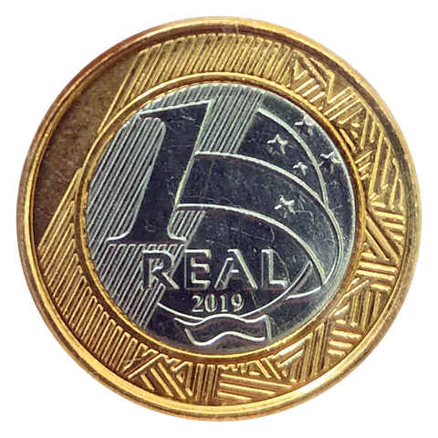
1 moeda(s): 1 Real 2019 – 25 Anos do Plano Real
1-real-2019-25-anos-anverso.png · 1-real-2019-25-anos-reverso.png
Wikimedia Commons — Photograph: User:Avelludo. Design: Central Bank of (Public domain)


com-30anos
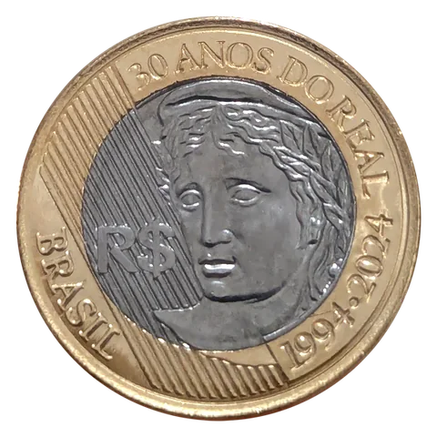
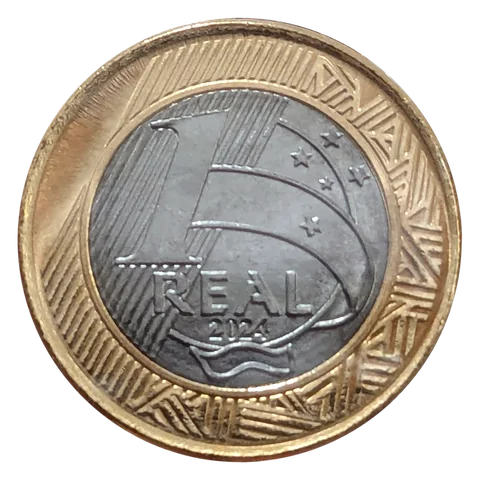
1 moeda(s): 1 Real 2024 – 30 Anos do Plano Real
1-real-2024-30-anos-anverso.png · 1-real-2024-30-anos-reverso.png
Wikimedia Commons — Photograph: User:Avelludo. Design: Central Bank of (Public domain)


com-60anos
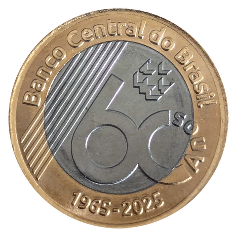
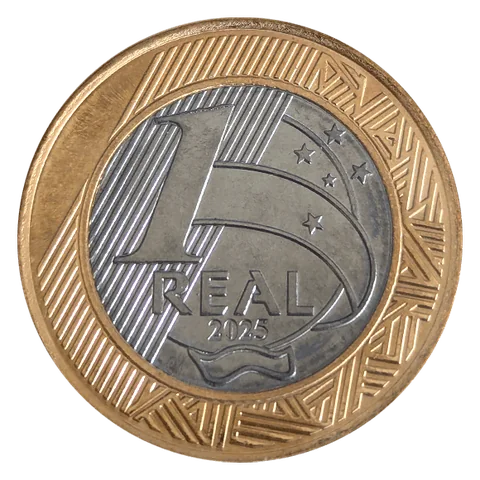
1 moeda(s): 1 Real 2025 – 60 Anos Banco Central do Brasil
1-real-2025-60-anos-bcb-anverso.png · 1-real-2025-60-anos-bcb-reverso.png
Wikimedia Commons — Photograph: User:Avelludo. Design: Central Bank of (Public domain)


oli-entrega-da-bandeira
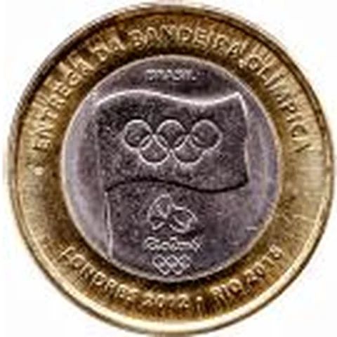
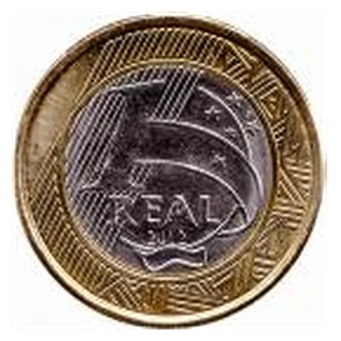
1 moeda(s): 1 Real 2012 – Entrega da Bandeira
1_real_Flag_Handover_cropped_.png · 1_real_Flag_Handover.png
Wikimedia Commons — Phamat123 (CC BY-SA 4.0)
.png){kind=link}

oli-atletismo
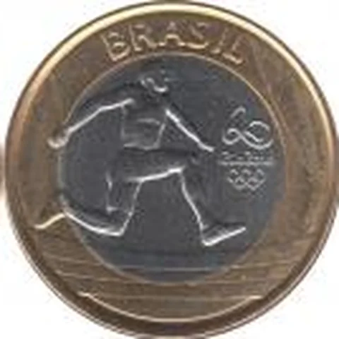

1 moeda(s): 1 Real 2014 – Atletismo
1Real_Olympic_Games_Rio_2016_-_Atletism_cropped_.png · 1Real_Olympic_Games_Rio_2016_-_Atletism_.png
Wikimedia Commons — Rawlan1998 (CC BY-SA 4.0)
_(cropped).png){kind=link}
.png){kind=link}
oli-paratriatlo
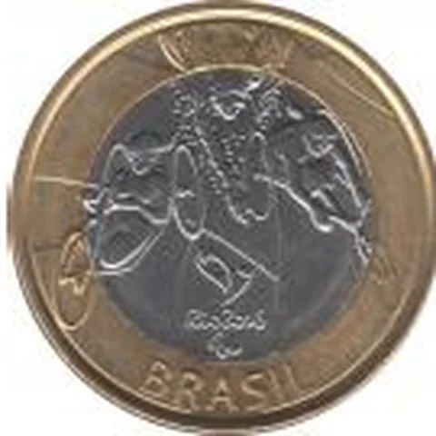

1 moeda(s): 1 Real 2014 – Paratriatlo
1_Real_Olympic_Games_Rio_2016_-_Paratriathlon_cropped_.png · 1_Real_Olympic_Games_Rio_2016_-_Paratriathlon_.png
Wikimedia Commons — Rawlan1998 (CC BY-SA 4.0)
_(cropped).png){kind=link}
.png){kind=link}
oli-golf
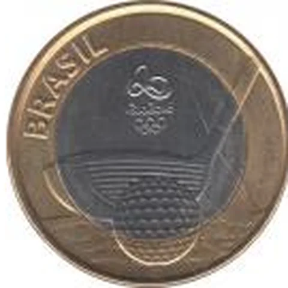

1 moeda(s): 1 Real 2014 – Golf
1_Real_Olympic_Games_Rio_2016_-_Golf_cropped_.png · 1_Real_Olympic_Games_Rio_2016_-_Golf_.png
Wikimedia Commons — Rawlan1998 (CC BY-SA 4.0)
_(cropped).png){kind=link}
.png){kind=link}
oli-natacao
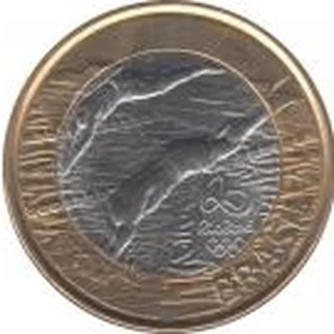
1 moeda(s): 1 Real 2014 – Natação
1_Real_Olympic_Games_Rio_2016_-_Swimming_cropped_.png · 1_Real_Olympic_Games_Rio_2016_-_Swimming_.png
Wikimedia Commons — Rawlan1998 (CC BY-SA 4.0)
_(cropped).png){kind=link}
.png){kind=link}
oli-basquete

1 moeda(s): 1 Real 2015 – Basquete
1_Real_Olympic_Games_Rio_2016_-_Basketball_cropped_.png · 1_Real_Olympic_Games_Rio_2016_-_Basketball_.png
Wikimedia Commons — Rawlan1998 (CC BY-SA 4.0)
_(cropped).png){kind=link}
.png){kind=link}
oli-paracanoagem
1 moeda(s): 1 Real 2015 – Paracanoagem
1_Real_Olympic_Games_Rio_2016_-_Paracanoe_cropped_.png · 1_Real_Olympic_Games_Rio_2016_-_Paracanoe_.png
Wikimedia Commons — Rawlan1998 (CC BY-SA 4.0)
_(cropped).png){kind=link}
.png){kind=link}
oli-vela

1 moeda(s): 1 Real 2015 – Vela
1_Real_Olympic_Games_Rio_2016_-_Sailing_cropped_.png · 1_Real_Olympic_Games_Rio_2016_-_Sailing_.png
Wikimedia Commons — Rawlan1998 (CC BY-SA 4.0)
_(cropped).png){kind=link}
.png){kind=link}
oli-rugby

1 moeda(s): 1 Real 2015 – Rugby
1_Real_Olympic_Games_Rio_2016_-_Rugby_cropped_.png · 1_Real_Olympic_Games_Rio_2016_-_Rugby_.png
Wikimedia Commons — Rawlan1998 (CC BY-SA 4.0)
_(cropped).png){kind=link}
.png){kind=link}
oli-futebol

1 moeda(s): 1 Real 2015 – Futebol
1_Real_Olympic_Games_Rio_2016_-_Soccer_cropped_.png · 1_Real_Olympic_Games_Rio_2016_-_Soccer_.png
Wikimedia Commons — Rawlan1998 (CC BY-SA 4.0)
_(cropped).png){kind=link}
.png){kind=link}
oli-volei

1 moeda(s): 1 Real 2015 – Volei
1_Real_Olympic_Games_Rio_2016_-_Volleyball_cropped_.png · 1_Real_Olympic_Games_Rio_2016_-_Volleyball_.png
Wikimedia Commons — Rawlan1998 (CC BY-SA 4.0)
_(cropped).png){kind=link}
.png){kind=link}
oli-atletismo-paralimpico

1 moeda(s): 1 Real 2015 – Atletismo Paralímpico
1_Real_Olympic_Games_Rio_2016_-_Paralympic_Athletics_cropped_.png · 1_Real_Olympic_Games_Rio_2016_-_Paralympic_Athletics_.png
Wikimedia Commons — Rawlan1998 (CC BY-SA 4.0)
_(cropped).png){kind=link}
.png){kind=link}
oli-judo

1 moeda(s): 1 Real 2015 – Judo
1_Real_Olympic_Games_Rio_2016_-_Judo_cropped_.png · 1_Real_Olympic_Games_Rio_2016_-_Judo_.png
Wikimedia Commons — Rawlan1998 (CC BY-SA 4.0)
_(cropped).png){kind=link}
.png){kind=link}
oli-natacao-paralimpica

1 moeda(s): 1 Real 2016 – Natação Paralímpica
1_Real_Olympic_Games_Rio_2016_-_Paralympic_Swimming_cropped_.png · 1_Real_Olympic_Games_Rio_2016_-_Paralympic_Swimming_.png
Wikimedia Commons — Rawlan1998 (CC BY-SA 4.0)
_(cropped).png){kind=link}
.png){kind=link}
oli-boxe
1 moeda(s): 1 Real 2016 – Boxe
1_Real_Olympic_Games_Rio_2016_-_Boxing_cropped_.png · 1_Real_Olympic_Games_Rio_2016_-_Boxing_.png
Wikimedia Commons — Rawlan1998 (CC BY-SA 4.0)
_(cropped).png){kind=link}
.png){kind=link}
oli-mascote-olimpico

1 moeda(s): 1 Real 2016 – Mascote Olímpico
1_Real_Olympic_Games_Rio_2016_-_Olympic_Mascot_cropped_.png · 1_Real_Olympic_Games_Rio_2016_-_Olympic_Mascot_.png
Wikimedia Commons — Rawlan1998 (CC BY-SA 4.0)
_(cropped).png){kind=link}
.png){kind=link}
oli-mascote-paralimpico

1 moeda(s): 1 Real 2016 – Mascote Paralímpico
1_Real_Olympic_Games_Rio_2016_-_Paralympic_Mascot_cropped_.png · 1_Real_Olympic_Games_Rio_2016_-_Paralympic_Mascot_.png
Wikimedia Commons — Rawlan1998 (CC BY-SA 4.0)
_(cropped).png){kind=link}
.png){kind=link}